Inno Setup 初体验
打包本就是了简洁，所以我选择 Inno Setup。
这是一款免费、简洁的打包工具，甚至不需要任何教程，就能直接上手的打包工具。
以最近用 WPF 开发的简单项目为例，记录整个打包过程。
软件发布
设置图标
当开发完项目，准备发布之前，我们一般会进行项目的 图标之类的设置。
在 VS 2019 中，鼠标选中项目右击，选择属性，大概会弹出下面类型的窗口，在资源那一栏，就可以去浏览、选择你想要的图标、确定，这个图标会被自动复制到项目的根目录下的。
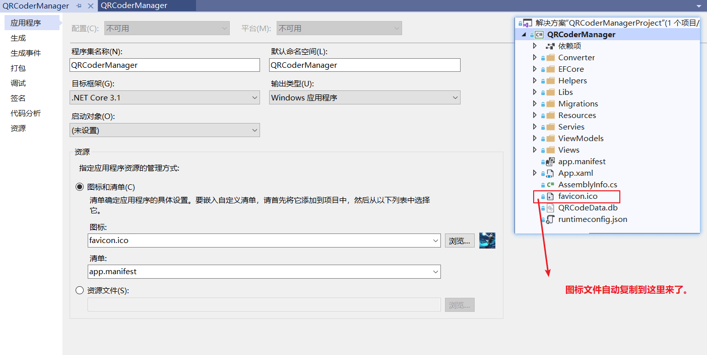
◭ 设置图标
发布应用
依次选择发布、启动、文件夹、下一步、设置发布文件夹、完成。
根据需求选择不同的部署方式，依赖框架模式需要目标电脑有对应的环境（本项目依赖 dotnet core 3），独立模式，会在发布时将所有需要的环境都保存在发布文件夹下，好处是不要求目标电脑有对应环境，坏处是发布后的文件体积很大。
目标运行时的设置，则跟跨平台有关。
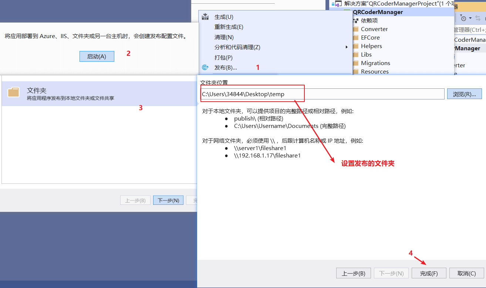
◭ 准备发布
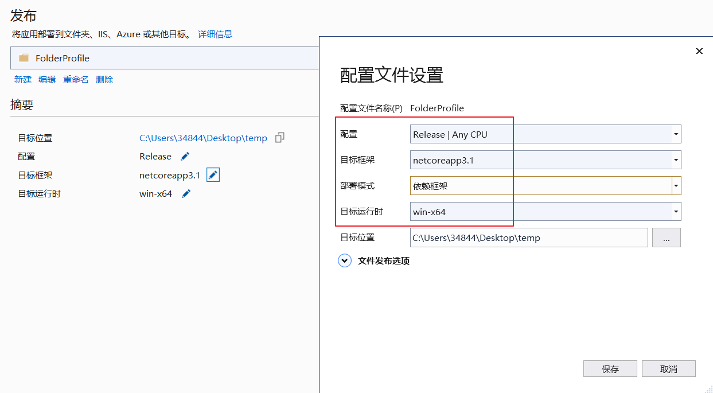
◭ 准备发布
项目发布完，就会发现你设置的发布路径里多了很多文件，里面有一个 exe（因为是 wpf 项目），点击它就能够运行软件了。如果是懒癌患者，到达这一步就已经可以结束了，毕竟已经可以正常使用了，而且只要直接压缩，就能发给别人使用啦。
软件打包
准备工作
现在，桌面上已经出现了一个 temp 文件（我设置的发布路径），我们再稍微准备一点点东西，让打包的时候更加完善。 一个图标，一个许可证，一个空文件夹。
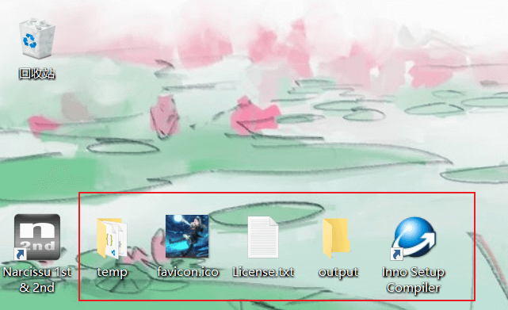
◭ 打包前的准备
开始打包
下面基本上都是图片啦，安装图中的提示，点击下一步，最后生成就行了。
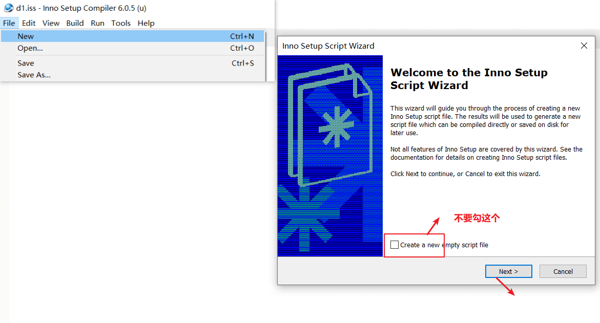
◭ 步骤 1
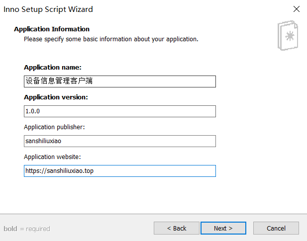
◭ 步骤 2
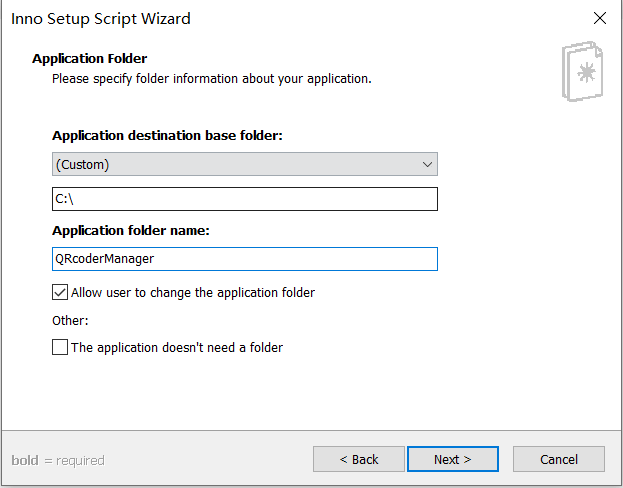
◭ 步骤 3
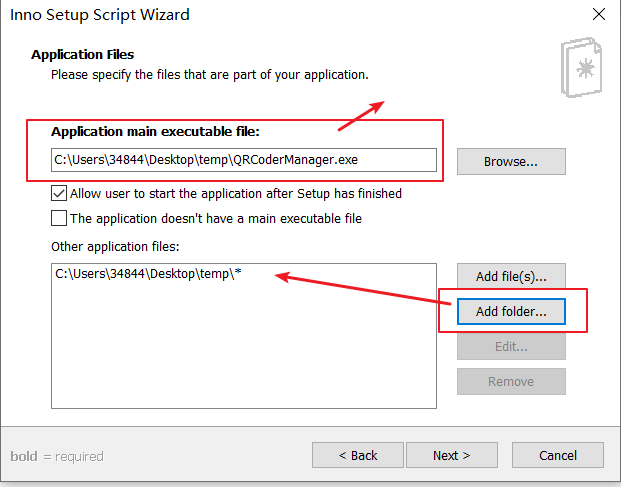
◭ 步骤 4
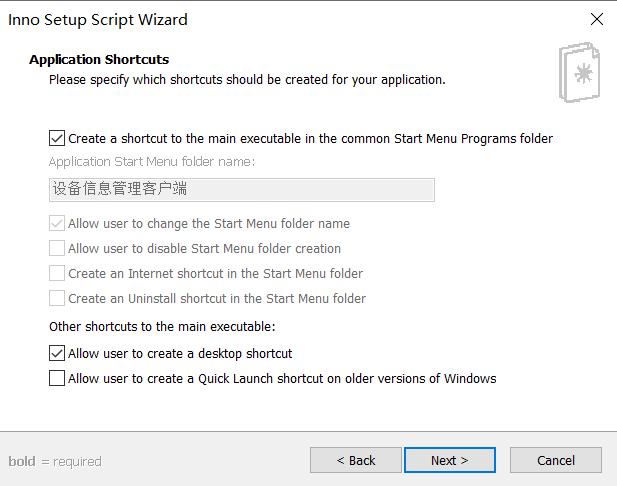
◭ 步骤 5
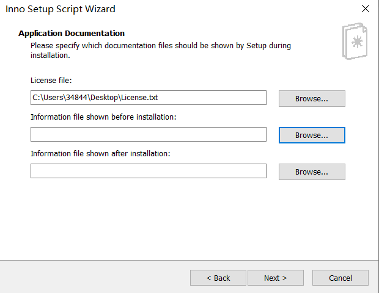
◭ 步骤 6
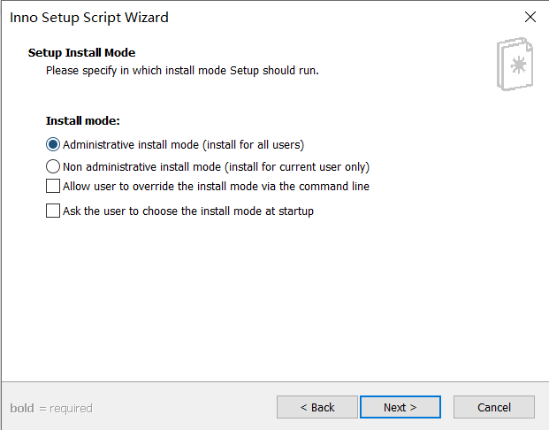
◭ 步骤 7
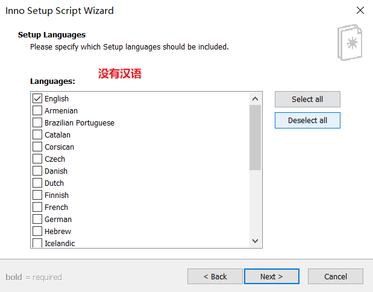
◭ 步骤 8
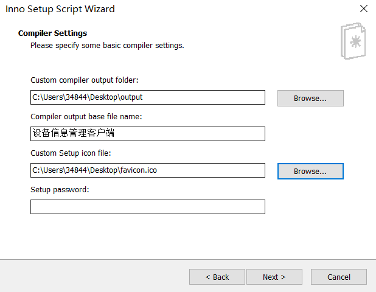
◭ 步骤 9
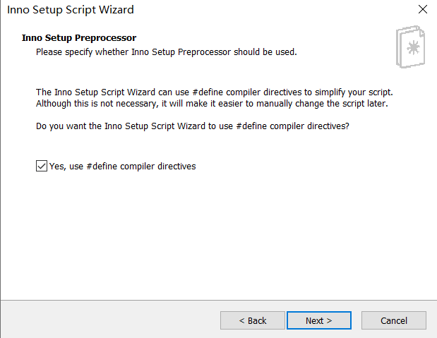
◭ 步骤 10
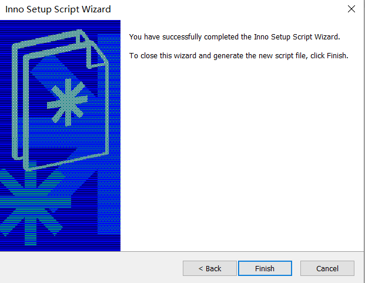
◭ 步骤 11
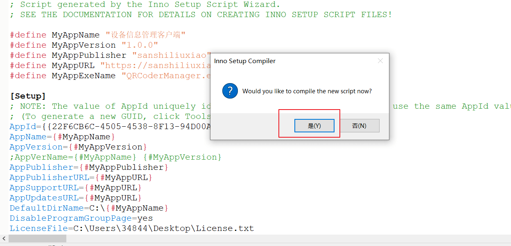
◭ 步骤 12
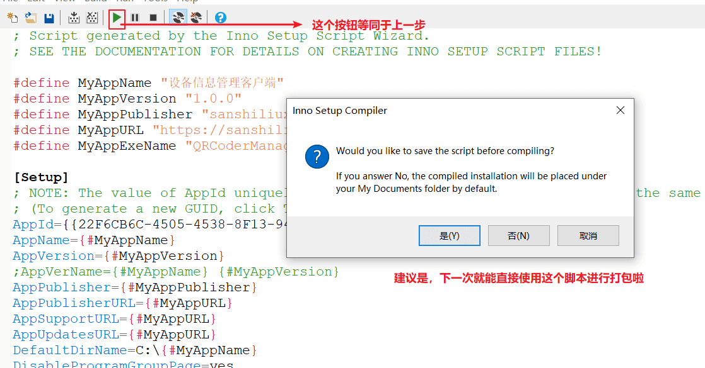
◭ 步骤 13
安装预览
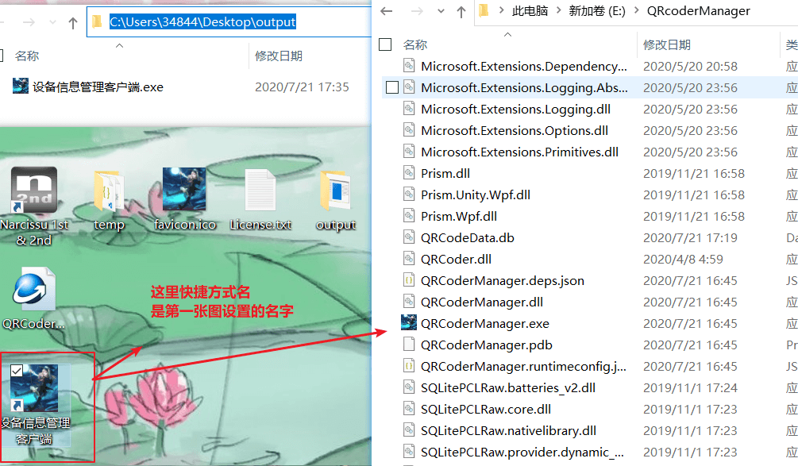
◭ 安装信息
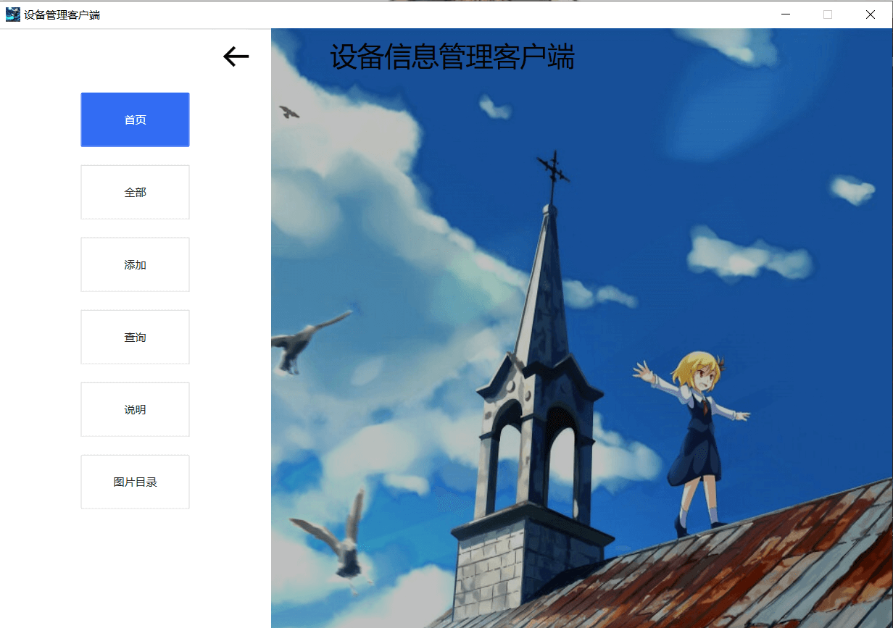
◭ 软件运行界面
Google广告
假装这里有广告